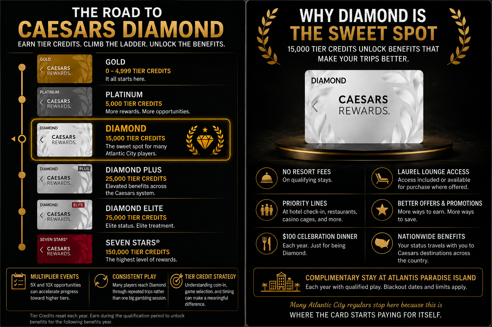

AC Action Report Playbook Preview
Estimated Reading Time: 4 Minutes
Most people walk into Caesars Atlantic City hoping to hit a jackpot.
The ones chasing Diamond status are usually after something else.
They’re after Tier Credits.
Diamond status makes a real difference if you visit Atlantic City a few times a year.
Resort fees disappear. Priority lines become available. The annual Celebration Dinner has real value. Lounges enter the conversation.
And those benefits follow you throughout the Caesars system, whether you’re in Atlantic City, Las Vegas, or somewhere in between.
The question many players eventually ask is simple:
How do you earn meaningful Tier Credits without bringing thousands of dollars every trip?
For many experienced Caesars regulars, the answer starts with video poker.
Your Tier Credits earned in Atlantic City count throughout Caesars Rewards.
For many players, Diamond is the point where the card starts paying for itself.
Tier Credits reset each year, so the goal is to earn enough during the qualification period to unlock benefits for the following benefits year.
For many Atlantic City players who visit several times per year, Diamond is the sweet spot.
Not because it’s flashy.
Because it’s useful.

Most people think Diamond status comes from one huge gambling trip.
That’s usually not how it happens.
Many experienced players approach it differently.
They focus on multiplier events. They focus on preserving bankroll. They focus on generating coin-in.
And many eventually end up at the same place: video poker.
If you’re trying to understand how regular Caesars players approach the Diamond chase, the complete guide covers:
Related Reading: